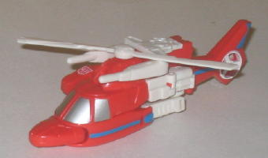

Allegiance : Autobot
Size : Legend
Difficulty of Transformation : Medium
Color Scheme : Dull bluish gray, moderately light blue, and some silver and dark dull gray
Individual Rating : 7.0
Set Price
: $20 U.S.
Series
: Classic/Generation One
Overall Rating
: 7.4
 Air
Raid
Air
Raid
Allegiance
: Autobot
Size
: Legend
Difficulty of Transformation
: Medium
Color Scheme
: Dull bluish gray,
moderately light blue, and some silver and dark dull gray
Individual Rating
: 7.0
(NOTE: Because this is a repaint, this is not a full-blown review. This mainly covers any changes made to the mold and the color scheme, and merely compares it to Legends of Cybertron Jetfire. For a review on the mold itself, read the review of Legends of Cybertron Jetfire here .)
On the package, Air Raid's
name is mixed up with Skydive's. "Air Raid" here is actually an homage
to G2 Skydive in terms of his color scheme, but mistake or not, Air Raid
is what he's called on the package, so Air Raid is what I'm calling him.
Regardless, Air Raid's color scheme of gray, dull gray, and dull blue may
be a bit more realistic than, say, the green of LoC Jetfire, but it certainly
looks far, far duller, homage or not. The different shades of gray offer
no contrast whatsoever, and the blue, while not a clashy touch, is too
dull to really make the toy eye-catching. There's a few touches of silver,
which look fairly nice against the blue, but those are far and few in between.
He's the worst of the color schemes to be put on this mold, in my opinion.
No mold changes have
been made to Universe 2.0 Air Raid.
 Autobot
Blades
Autobot
Blades

Allegiance
: Autobot
Size
: Legend
Difficulty of Transformation
: Medium
Color Scheme
: Off-white, light red,
and some dark blue and silver
Individual Rating
: 7.2
(NOTE: For a review on the mold itself, read the review of Legends of Cybertron Evac here .)
Although Blades here
is the same idea as the mainline
Voyager Blades
repaint-- a redeco of Cybertron Evac as an homage to the G1 Protectobot,
just of a different size class of the figure-- there are actually some
very noticeable differences in their color schemes. This version of Blades
is a bit more G1-accurate, with an off-white replacing the black on the
mainline Voyager toy. Although I wouldn't like this amount of off-white
on a larger toy with this scheme, on a Legends toy it works very well--
all three of the major colors complement each other perfectly, and make
Blades very pleasing to the eye. He also has quite a few paint applications
for a Legends toy, which is always nice. The only color choice I'm not
fond of is the blue face-- that just looks odd against the white helmet.
Overall, I'd rate Blades' colors above LoC Evac, but below
Classics
Whirl
.
No mold changes have
been made to Universe 2.0 Legends Blades.
 Ramjet
Ramjet
Allegiance
: Decepticon
Size
: Legend
Difficulty of Transformation
: Easy
Color Scheme
: Off-white, black,
dark muddy brown, and some dull metallic gold
Individual Rating
: 8.0
(NOTE: For a review on the mold itself, read the review of Legends of Cybertron Starscream here .)
Ramjet, being a repaint
of a Starscream mold again, is predictably an homage to the G1 character,
though less so than most other G1 homage repaints. It retains the primarily
white and black color scheme, but instead adds a muddy brown instead of
the rusty/dull red on the original toy. It doesn't look BAD, but I really
would've preferred the rusty red, as brown makes the toy look a little
more plain somehow-- not to mention that Ramjet's packmate Thrust has almost
the same color of brown to boot, which makes it a tad redundant. The gold
acccents on the cockpit and shouldersr look great, though, and Ramjet certainly
has an adequate number of paint apps. He's my least favorite of the two
LoC Starscream repaints in this set, though.
No mold changes have
been made to Universe 2.0 Ramjet.
 Skydive
Skydive

Allegiance
: Autobot
Size
: Legend
Difficulty of Transformation
: Medium
Color Scheme
: Black, sky blue, and
some white, chalky bright yellow, and light metallic silvery blue
Individual Rating
: 6.7
(NOTE: For a review on the mold itself, read the review of Legends of Cybertron Soundwave here .)
As mentioned earlier,
Skydive and Air Raid's names were mixed up on the package, so "Skydive"
here is actually an homage to the G2 Cyberjet Air Raid, both in terms of
alt mode and general color scheme. I really like the sky blue/black color
scheme-- both colors contrast really nicely with each other, and of course
the black makes sense for a stealth bomber alt mode. I'm also quite fond
of the blue fade pattern on the wings, it really looks nice, and the metallic
silvery blue detailing on the top of the cockpit and the lower legs just
looks fantastic on a toy of this scale. The white chest is also a decent
color, though I would have preferred if they hadn't emphasized the shape
of the chest so much in robot mode so that it's not QUITE so obvious that
this is a Soundwave repaint. I'm also not fond of the yellow face, that
just looks weird. (The yellow cockpit in vehicle mode looks fine, though.)
Overall, I think this one edges out LoC Soundwave in the color department.
No mold changes have
been made to Universe 2.0 Skydive.
 Thrust
Thrust
Allegiance
: Decepticon
Size
: Legend
Difficulty of Transformation
: Easy
Color Scheme
: Dark brown, black,
and some silver
Individual Rating
: 8.2
Thrust is the second
repaint of the LoC Starscream mold in this set, and is again an homage
to the G1 character of the same name. Like Ramjet, though, he's not a slavish
homage-- the original Thrust had a dull red color, whereas like his packmate
this toy replaced the dull red with brown. Black and silver make up his
other colors, and they go quite well with the brown, but I think a dull
red would have made Thrust stand out a bit more from his packmate and made
him stand out a tad more. However, this way the toy is also a bit of an
homage (minus the purple) to the Toys "R" Us Exclusive
Cybertron
Voyager Starscream repaint
, which is the same color scheme on the Voyager
version of this toy, almost to a tee. Overall I'd put this toy about middle-of-the-road
as far as the LoC Starscream redecos go, just barely edging out LoC Starscream
himself.
No mold changes have
been made to Universe 2.0 Thrust.
The Aerial Rivals five-pack I would recommend slightly over the Special Team Leaders five-pack, due to the overall better molds used in this set. However, this set sort of "cheats" when it comes to the score by using the best Legends of Cybertron mold--Starscream--twice, which artificially inflates the overall rating a bit. Quite frankly, even though I gave this set the better rating, I like the Special Team Leaders set a bit better, since I think the usage of the molds is more inspired and that set has a better "theme" to it. This set is still fairly good, though, and is a dynamite value pack-- it's hardly something I wouldn't recommend if you like Legends class figures.
Reviews by Beastbot